<title>Learn You a dreamengine for Great Good!</title>
<style>
  :root{
    --ink:#fff1e8; --ink-soft:#c2c3c7; --ink-faint:#8b8f9c;
    --ground:#141d3a; --panel:#10162e;
    --yellow:#ffec27; --green:#00e436; --red:#ff004d; --blue:#29adff;
    --line:#2b3a63;
    --serif:Georgia,"Iowan Old Style","Times New Roman",serif;
    --mono:ui-monospace,"Cascadia Code",Menlo,Consolas,monospace;
    --comic:"Comic Sans MS","Comic Neue","Chalkboard SE",cursive;
    --col:680px;
  }
  *{box-sizing:border-box}
  html{color-scheme:dark}
  body{margin:0;background:
      radial-gradient(120% 80% at 50% -10%, #23336a 0%, var(--ground) 55%, #0d1329 100%);
      background-attachment:fixed;
      color:var(--ink);font-family:var(--serif);
      font-size:19px;line-height:1.72;-webkit-font-smoothing:antialiased;}
  .wrap{max-width:var(--col);margin:0 auto;padding:0 24px 60px;}
  header.hero{max-width:860px;margin:0 auto;padding:76px 24px 24px;text-align:center;}
  .eyebrow{font-family:var(--mono);font-size:13px;letter-spacing:.32em;text-transform:uppercase;
    color:var(--yellow);margin:0 0 22px;}
  .booktitle{font-family:var(--comic);font-weight:700;line-height:1.05;margin:0;
    font-size:clamp(38px,7vw,68px);text-wrap:balance;color:var(--ink);text-shadow:4px 4px 0 var(--red);}
  .booktitle .b{color:var(--yellow);text-shadow:4px 4px 0 #1d2b53;}
  .sub{font-family:var(--serif);font-style:italic;color:var(--ink-soft);font-size:19px;margin-top:26px;}
  .toc{max-width:var(--col);margin:26px auto 0;padding:0 24px;display:grid;gap:8px;}
  .toc a{display:flex;gap:14px;align-items:baseline;text-decoration:none;font-family:var(--mono);
    font-size:14px;color:var(--ink-soft);border:1px solid var(--line);border-radius:9px;
    padding:11px 15px;background:var(--panel);}
  .toc a:hover{border-color:var(--yellow);color:var(--ink);}
  .toc .num{color:var(--yellow);}
  .chap-head{margin:2.8em 0 1.2em;padding-top:2.4em;border-top:1px solid var(--line);}
  .chap-head:first-of-type{border-top:0;padding-top:.6em;}
  .chap-no{font-family:var(--mono);font-size:12px;letter-spacing:.28em;text-transform:uppercase;color:var(--yellow);}
  .chap-kick{font-family:var(--mono);font-size:12px;letter-spacing:.2em;text-transform:uppercase;color:var(--ink-faint);margin-left:12px;}
  .chap-title{font-family:var(--comic);font-size:clamp(27px,5vw,38px);line-height:1.1;
    text-wrap:balance;margin:.35em 0 0;color:var(--green);}
  p{margin:0 0 1.15em;}
  p.lead::first-letter{font-family:var(--comic);font-size:3.2em;line-height:.8;
    float:left;padding:6px 12px 0 0;color:var(--yellow);}
  .creature{display:flex;justify-content:center;margin:.4em 0 1.4em;}
  .creature img{width:230px;max-width:70%;image-rendering:pixelated;border-radius:12px;
    border:1px solid var(--line);box-shadow:0 10px 26px -14px #000;}
  pre.term{border-left:3px solid var(--red);color:var(--ink-soft);white-space:pre;}
  pre.term .e{color:var(--red);} pre.term .p{color:var(--green);}
  strong{color:var(--yellow);font-weight:700;}
  em{color:var(--ink);font-style:italic;}
  code{font-family:var(--mono);font-size:.84em;background:var(--panel);border:1px solid var(--line);
    padding:1px 6px;border-radius:5px;color:var(--green);}
  h3{font-family:var(--comic);font-size:22px;color:var(--ink);margin:2em 0 .2em;}
  figure.screen{margin:2.2em 0;}
  .bezel{background:linear-gradient(#3a3f52,#23273a);border-radius:16px;padding:16px 16px 14px;
    box-shadow:0 18px 40px -18px #000, inset 0 1px 0 #52586e;position:relative;}
  .bezel::after{content:"dreamengine";position:absolute;bottom:5px;left:0;right:0;text-align:center;
    font-family:var(--mono);font-size:9px;letter-spacing:.3em;color:#6a7088;text-transform:uppercase;}
  .glass{position:relative;border-radius:6px;overflow:hidden;background:#000;
    box-shadow:inset 0 0 60px rgba(0,0,0,.6);aspect-ratio:320/200;}
  .glass img{width:100%;height:100%;display:block;image-rendering:pixelated;}
  figcaption{font-family:var(--mono);font-size:13px;color:var(--ink-faint);text-align:center;
    margin-top:12px;line-height:1.5;}
  figcaption b{color:var(--ink-soft);font-weight:400;}
  pre{font-family:var(--mono);font-size:14.5px;line-height:1.6;background:var(--panel);
    border:1px solid var(--line);border-left:3px solid var(--yellow);border-radius:8px;
    padding:16px 18px;overflow-x:auto;margin:1.6em 0;color:var(--ink-soft);}
  pre .c{color:#6a7088;} pre .f{color:var(--yellow);} pre .k{color:var(--red);}
  pre .n{color:var(--blue);} pre .s{color:var(--green);}
  aside{display:grid;grid-template-columns:88px 1fr;gap:16px;align-items:start;
    background:var(--panel);border:1px solid var(--line);border-radius:12px;padding:16px 18px;margin:2em 0;}
  aside.warn{border-color:#5a2740;border-left:3px solid var(--red);}
  aside .g{width:88px;image-rendering:pixelated;border-radius:8px;align-self:center;}
  aside .say{font-family:var(--comic);font-size:16px;line-height:1.5;color:var(--ink);}
  aside .say .lead{display:block;font-size:12px;letter-spacing:.14em;text-transform:uppercase;
    font-family:var(--mono);margin-bottom:4px;color:var(--green);}
  aside.warn .say .lead{color:var(--red);}
  aside p{margin:0;} aside p+p{margin-top:.6em;}
  footer{max-width:var(--col);margin:60px auto 0;padding:26px 24px 0;border-top:1px solid var(--line);
    font-family:var(--mono);font-size:13px;color:var(--ink-faint);text-align:center;line-height:1.7;}
  footer b{color:var(--yellow);font-weight:400;}
  @media (max-width:520px){ aside{grid-template-columns:60px 1fr} aside .g{width:60px} body{font-size:17px} }
  @media (prefers-reduced-motion:reduce){*{animation:none!important}}
</style>

<header class="hero">
  <p class="eyebrow">A field guide to a very small machine</p>
  <p class="booktitle">Learn You a <span class="b">dreamengine</span><br>for Great Good!</p>
  <p class="sub">In which we fill a tiny screen with coloured dots, and call it a game.</p>
</header>

<nav class="toc">
  <a href="#ch1"><span class="num">1</span><span>So, You Want To Make A Little World</span></a>
  <a href="#ch2"><span class="num">2</span><span>Keeping The Sun On The Screen</span></a>
  <a href="#ch3"><span class="num">3</span><span>A Small Cast Of Shapes</span></a>
  <a href="#ch4"><span class="num">4</span><span>A World That Moves On Its Own</span></a>
  <a href="#ch5"><span class="num">5</span><span>Your First Actual Game</span></a>
</nav>

<main class="wrap">

  
  <div class="chap-head" id="ch1">
    <span class="chap-no">Chapter 1</span>
    <span class="chap-kick">the one job</span>
    <h2 class="chap-title">So, You Want To Make A Little World</h2>
  </div>
  
  <div class="creature">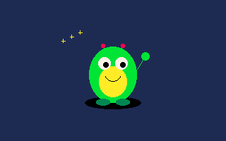</div>

  <p class="lead">Hello! Come in, sit down, mind the pixels &mdash; they get everywhere. You&rsquo;re here because you want to make a game, and everybody told you that means C, and C means pointers, and pointers mean crying. Forget all that for now. In here we have exactly <strong>one job</strong>: fill a tiny screen &mdash; 320 by 200, smaller than a postage stamp with delusions of grandeur &mdash; with coloured dots, sixty times a second. That&rsquo;s a game. That&rsquo;s the whole racket.</p>

  <h3>The one function you cannot escape</h3>
  <p>You fill the screen by writing a function called <code>draw</code>. The console calls it for you, over and over, forever, until someone closes the window or the heat death of the universe, whichever comes first. Here is a complete, real, honest-to-goodness dreamengine program:</p>

  <pre><span class="c">#include "studio.h"</span>

<span class="k">void</span> <span class="f">draw</span>(<span class="k">void</span>) {
    <span class="f">cls</span>(<span class="s">CLR_DARK_BLUE</span>);            <span class="c">// paint the whole sky one colour</span>
    <span class="f">circfill</span>(<span class="n">160</span>, <span class="n">100</span>, <span class="n">20</span>, <span class="s">CLR_YELLOW</span>); <span class="c">// a sun, right in the middle</span>
}</pre>

  <p>Run it, and the machine does what you said. Not a mock-up of what it might do &mdash; the actual thing:</p>

  
  <figure class="screen">
    <div class="bezel"><div class="glass"></div></div>
    <figcaption><b>the output of the four lines above &mdash; nothing else.</b><br>every picture in this book was drawn by the console it is teaching you.</figcaption>
  </figure>

  <p><code>cls</code> means <em>clear screen</em>. It&rsquo;s the first thing you do every frame, like wiping the whiteboard before you draw the next silly cat. Then <code>circfill</code> stamps a filled circle: the two numbers say <em>where</em> (160 across, 100 down &mdash; smack in the middle), the third says <em>how big</em>, and the last says <em>what colour</em>. That&rsquo;s the shape of nearly every drawing call you&rsquo;ll ever write: where, how big, what colour.</p>

  
  <aside class="">
    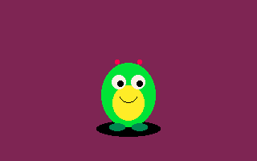
    <div class="say"><span class="lead">Psst. A secret.</span><p>If you <em>forget</em> the <code>cls</code>, yesterday&rsquo;s cats don&rsquo;t get wiped &mdash; they pile up, frame on frame, smeared across the screen.</p><p>Sometimes cats piling up is <em>exactly</em> the effect you want. Then it isn&rsquo;t a bug. Then it&rsquo;s called being clever. (Hold that thought until Chapter 2.)</p></div>
  </aside>

  <h3>Thirty-two crayons, and not one more</h3>
  <p>You may have noticed <code>CLR_YELLOW</code> up there and wondered how many of these there are. Not sixteen million. Not a colour picker with a little eyedropper. There are <strong>thirty-two</strong>. That&rsquo;s the whole crayon box, numbered 0 to 31, and yellow happens to be number 10.</p>

  
  <figure class="screen">
    <div class="bezel"><div class="glass">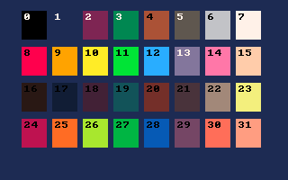</div></div>
    <figcaption><b>the entire palette, swatch by swatch.</b><br>you can write <b>CLR_YELLOW</b> or just <b>10</b> &mdash; the machine doesn&rsquo;t mind which.</figcaption>
  </figure>

  <p>Fewer crayons is a <em>gift</em>, not a limitation. It&rsquo;s the reason everything you make will look like it belongs together &mdash; like it came from one world &mdash; whether or not you happen to have any taste. The console is quietly doing your art direction for you. Say thank you.</p>

  
  <aside class="warn">
    
    <div class="say"><span class="lead">Here be a small dragon</span><p>The greys in this box are spelled the British way: <code>CLR_DARK_GREY</code>, with an <em>E</em>. Type <code>GRAY</code> and the compiler will look at you like you&rsquo;ve tracked mud through its house. Everyone does this once. Now you&rsquo;ve done it here, for free.</p></div>
  </aside>

  <h3>What the machine says when you get it wrong</h3>
  <p>Let&rsquo;s actually make that mistake on purpose, because you <em>will</em> make it by accident, and the first time the compiler shouts at you it&rsquo;s good to know it&rsquo;s only shouting one small, specific thing. Type <code>cls(CLR_GRAY)</code>, hit run, and here is the entire tantrum, word for word:</p>

  <pre class="term"><span class="e">error:</span> use of undeclared identifier <span class="p">'CLR_GRAY'</span>
    cls(CLR_GRAY);
        ^~~~~~~~</pre>

  <p>That&rsquo;s it. That&rsquo;s the whole scary red wall of text everyone dreads. Read it plainly: <em>&ldquo;you used a name, <code>CLR_GRAY</code>, that I&rsquo;ve never heard of&rdquo;</em> (because it&rsquo;s spelled <code>GREY</code>). The little <code>^~~~~</code> is the machine politely pointing its finger at the <em>exact</em> spot it got confused. A compiler error is almost never a disaster &mdash; it&rsquo;s a colleague telling you which word it choked on. Fix that word, run again.</p>

  <h3>A painting that flinches when you poke it</h3>
  <p>A sun just sitting there is a <em>painting</em>, not a game. A game is a painting that flinches when you poke it. So let&rsquo;s give ourselves something to poke with, and let the sun slide when we press a button:</p>

  <pre><span class="c">#include "studio.h"</span>

<span class="k">int</span> x = <span class="n">160</span>, y = <span class="n">100</span>;

<span class="k">void</span> <span class="f">update</span>(<span class="k">void</span>) {           <span class="c">// the thinking half — runs before every draw</span>
    <span class="k">if</span> (<span class="f">btn</span>(<span class="n">0</span>, <span class="s">BTN_LEFT</span>))  x--;  <span class="c">// player 0 holding left? nudge left</span>
    <span class="k">if</span> (<span class="f">btn</span>(<span class="n">0</span>, <span class="s">BTN_RIGHT</span>)) x++;
}

<span class="k">void</span> <span class="f">draw</span>(<span class="k">void</span>) {             <span class="c">// the painting half — runs every frame</span>
    <span class="f">cls</span>(<span class="s">CLR_DARK_BLUE</span>);
    <span class="f">circfill</span>(x, y, <span class="n">20</span>, <span class="s">CLR_YELLOW</span>);
}</pre>

  <p>And that&rsquo;s the whole secret, really. <code>draw</code> is the hand that paints; <code>update</code> is the little brain that decides <em>what</em> to paint next. <code>btn</code> asks a simple question &mdash; <em>is this button held down right now?</em> &mdash; and answers <em>yes</em> or <em>no</em>. Everything else &mdash; sprites, sound, whole galaxies &mdash; is just more of these three ideas, stacked up until they look impressive.</p>


  
  <div class="chap-head" id="ch2">
    <span class="chap-no">Chapter 2</span>
    <span class="chap-kick">motion & edges</span>
    <h2 class="chap-title">Keeping The Sun On The Screen</h2>
  </div>
  
  <div class="creature">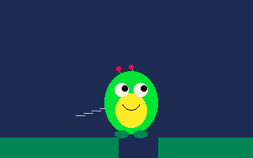</div>

  <p>We left our sun able to walk. There is a problem with letting things walk: they walk <em>off</em>. Hold <em>right</em> long enough and the sun strolls clean past the edge of the world and is never seen again.</p>

  
  <figure class="screen">
    <div class="bezel"><div class="glass">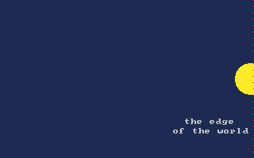</div></div>
    <figcaption><b>x kept counting up past 320.</b><br>the screen ends; the number did not.</figcaption>
  </figure>

  <p>The screen is <strong>320</strong> pixels wide and <strong>200</strong> tall, and the machine hands you those two numbers as <code>SCREEN_W</code> and <code>SCREEN_H</code> so you never have to remember them. To keep the sun home, we just refuse to let <code>x</code> wander out of bounds. This is called <em>clamping</em>, which is a big word for &ldquo;nope, that&rsquo;s far enough&rdquo;:</p>

  <pre><span class="k">void</span> <span class="f">update</span>(<span class="k">void</span>) {
    <span class="k">if</span> (<span class="f">btn</span>(<span class="n">0</span>, <span class="s">BTN_LEFT</span>))  x--;
    <span class="k">if</span> (<span class="f">btn</span>(<span class="n">0</span>, <span class="s">BTN_RIGHT</span>)) x++;

    <span class="k">if</span> (x &lt; <span class="n">20</span>)              x = <span class="n">20</span>;            <span class="c">// don't cross the left wall</span>
    <span class="k">if</span> (x &gt; <span class="s">SCREEN_W</span> - <span class="n">20</span>)  x = <span class="s">SCREEN_W</span> - <span class="n">20</span>; <span class="c">// or the right one (20 = the radius)</span>
}</pre>

  <p>Now the sun can shove itself against either wall and simply <em>stops</em>, politely, like a good sun. Notice we clamp at <code>20</code> from each edge &mdash; that&rsquo;s the sun&rsquo;s radius, so its <em>rim</em> kisses the wall instead of its centre. Little details like that are the whole difference between &ldquo;works&rdquo; and &ldquo;feels right.&rdquo;</p>

  
  <aside class="warn">
    
    <div class="say"><span class="lead">The famous off-by-one</span><p>The screen is 320 wide, but the pixels are numbered <em>0 to 319</em> &mdash; there is no pixel 320, the same way a dozen eggs are numbered 0 through 11 if you&rsquo;re a programmer and 1 through 12 if you&rsquo;re a normal person. Nearly every &ldquo;why is there a one-pixel gap&rdquo; bug in history is this, wearing a disguise.</p></div>
  </aside>

  <h3>Now make it bounce</h3>
  <p>Standing still at a wall is fine, but remember the secret from Chapter 1 &mdash; skip the <code>cls</code> and old frames pile up? Let&rsquo;s <em>spend</em> it. Give the ball a falling <em>speed</em> that gravity tugs on, flip it when it smacks the floor, and instead of wiping the screen, only <code>fade</code> it a touch each frame. The console paints its own long-exposure photograph, live:</p>

  
  <figure class="screen">
    <div class="bezel"><div class="glass">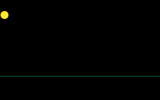</div></div>
    <figcaption><b>one ball, one <code>fade</code> per frame.</b><br>this is animated &mdash; the trail is just old frames not-quite-erased.</figcaption>
  </figure>

  <p>That whole glowing streak is a <em>single</em> circle, drawn once per frame at a spot that moved a little each time, over a screen we dim rather than clear. Motion, it turns out, is just arithmetic you do sixty times a second. Which raises a fair question: do we even <em>need</em> a button? Could the world move all by itself? (Yes. Chapter 4. Patience.)</p>


  
  <div class="chap-head" id="ch3">
    <span class="chap-no">Chapter 3</span>
    <span class="chap-kick">the drawing kit</span>
    <h2 class="chap-title">A Small Cast Of Shapes</h2>
  </div>
  
  <div class="creature">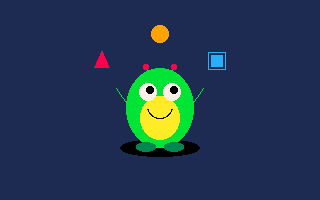</div>

  <p>So far our whole cast has been one circle in a hat. Time to meet the rest of the troupe. The console gives you a little kit of shapes, and &mdash; this is the important part &mdash; <em>a picture is just those shapes, stacked</em>. No art program, no imported files. Here is a whole scene, and every single thing in it is one plain shape call:</p>

  
  <figure class="screen">
    <div class="bezel"><div class="glass">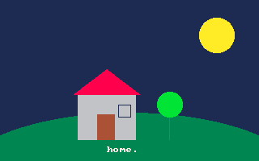</div></div>
    <figcaption><b>sun, hill, house, roof, door, window, tree, label.</b><br>eight shape calls. no sprites were harmed.</figcaption>
  </figure>

  <pre><span class="f">cls</span>(<span class="s">CLR_DARK_BLUE</span>);
<span class="f">circfill</span>(<span class="n">268</span>,<span class="n">44</span>,<span class="n">22</span>, <span class="s">CLR_YELLOW</span>);            <span class="c">// sun</span>
<span class="f">ovalfill</span>(<span class="n">160</span>,<span class="n">230</span>,<span class="n">220</span>,<span class="n">90</span>, <span class="s">CLR_DARK_GREEN</span>);     <span class="c">// a rolling hill (a squashed circle)</span>
<span class="f">rectfill</span>(<span class="n">96</span>,<span class="n">118</span>,<span class="n">72</span>,<span class="n">56</span>, <span class="s">CLR_LIGHT_GREY</span>);       <span class="c">// walls</span>
<span class="f">trifill</span>(<span class="n">90</span>,<span class="n">118</span>, <span class="n">174</span>,<span class="n">118</span>, <span class="n">132</span>,<span class="n">86</span>, <span class="s">CLR_RED</span>); <span class="c">// roof (three corners)</span>
<span class="f">rectfill</span>(<span class="n">120</span>,<span class="n">142</span>,<span class="n">22</span>,<span class="n">32</span>, <span class="s">CLR_BROWN</span>);          <span class="c">// door</span>
<span class="f">line</span>(<span class="n">210</span>,<span class="n">174</span>, <span class="n">210</span>,<span class="n">140</span>, <span class="s">CLR_BROWN</span>);          <span class="c">// a tree trunk</span>
<span class="f">circfill</span>(<span class="n">210</span>,<span class="n">130</span>,<span class="n">16</span>, <span class="s">CLR_GREEN</span>);             <span class="c">// leaves</span>
<span class="f">print</span>(<span class="s">"home."</span>, <span class="n">132</span>,<span class="n">182</span>, <span class="s">CLR_WHITE</span>);          <span class="c">// a label</span></pre>

  <p>You&rsquo;ve now met most of the family: <code>rectfill</code> and <code>rect</code> (solid box / just the outline), <code>ovalfill</code> (a squashed circle &mdash; hills, shadows, sleepy eyes), <code>trifill</code> (three corners, one triangle), <code>line</code>, and <code>print</code> for words. They all sing the same tune you already know: <em>where, how big, what colour</em>.</p>

  
  <aside class="">
    
    <div class="say"><span class="lead">Order is everything</span><p>The console is a lazy painter: it slaps down each shape right over whatever was already there. So you paint <em>back to front</em> &mdash; sky, then hill, then house, then the label on top.</p><p>Draw the roof <em>before</em> the walls and the walls sit on top of it, and you&rsquo;ll spend twenty confused minutes wondering who stole your roof. (It was you. It is always you. It was me too.)</p></div>
  </aside>


  
  <div class="chap-head" id="ch4">
    <span class="chap-no">Chapter 4</span>
    <span class="chap-kick">time</span>
    <h2 class="chap-title">A World That Moves On Its Own</h2>
  </div>
  
  <div class="creature">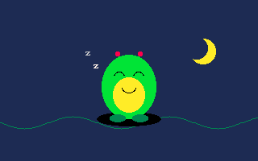</div>

  <p>Every moving thing so far has needed a finger on a button. But the machine has its own quiet heartbeat, ticking whether anyone is watching or not. It&rsquo;s called <code>frame</code>, and it just counts: 1, 2, 3&hellip; sixty times a second, forever. Feed that ever-climbing number into a <em>wave</em> &mdash; <code>sin_deg</code>, sine measured in friendly degrees &mdash; and the whole thing rocks gently along on its own:</p>

  
  <figure class="screen">
    <div class="bezel"><div class="glass">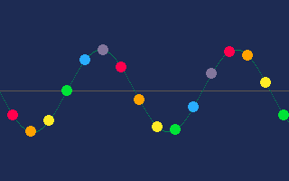</div></div>
    <figcaption><b>each dot&rsquo;s height is sin_deg() of its position + frame().</b><br>nobody is touching anything. it just goes.</figcaption>
  </figure>

  <pre><span class="k">void</span> <span class="f">draw</span>(<span class="k">void</span>) {
    <span class="f">cls</span>(<span class="s">CLR_DARK_BLUE</span>);
    <span class="k">int</span> y = <span class="n">100</span> + <span class="f">sin_deg</span>(<span class="f">frame</span>() * <span class="n">2</span>) * <span class="n">40</span>;  <span class="c">// bob 40px up and down over time</span>
    <span class="f">circfill</span>(<span class="n">160</span>, y, <span class="n">20</span>, <span class="s">CLR_YELLOW</span>);
}</pre>

  <p>No button, no <code>update</code>, and the sun bobs like a cork on water &mdash; because <code>frame()</code> keeps climbing and the sine keeps folding it back into a gentle up-and-down. Swap <code>sin_deg</code> for <code>cos_deg</code> on the <em>x</em> too and it swims in a circle. This one little trick &mdash; a clock, poured through a wave &mdash; is secretly behind half the juice in every game you&rsquo;ve ever loved: the coin that spins, the text that throbs, the enemy that hovers, the grass that sways.</p>

  
  <aside class="">
    
    <div class="say"><span class="lead">Degrees, not the other thing</span><p>We used <code>sin_deg</code>, which thinks in <em>degrees</em> &mdash; 0 to 360, the way a protractor does. There&rsquo;s a version that thinks in radians too, but it involves &pi; and a small amount of weeping. Start with degrees. Your future self, drawing a clock face at 90&deg; and having it Just Work, will thank you.</p></div>
  </aside>

  <p>You now have four ideas: fill the screen, poke it, keep things inside it, and let them move on their own. That&rsquo;s&hellip; actually a whole game, if you stack them. Shall we? Let&rsquo;s go get our great good.</p>


  
  <div class="chap-head" id="ch5">
    <span class="chap-no">Chapter 5</span>
    <span class="chap-kick">the payoff</span>
    <h2 class="chap-title">Your First Actual Game</h2>
  </div>
  
  <div class="creature">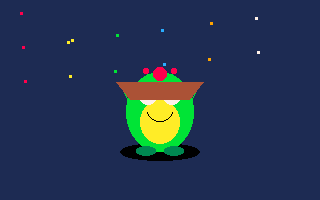</div>

  <p>Here it is &mdash; a real, whole, playable game, and there is not one single new idea in it. It&rsquo;s just the four things you already know, holding hands. A basket you slide left and right; cherries that fall; catch them, score goes up. Watch (this one is playing itself &mdash; the console driving its own basket, because we asked it to):</p>

  
  <figure class="screen">
    <div class="bezel"><div class="glass">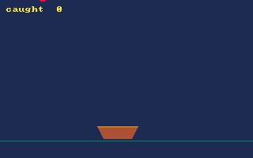</div></div>
    <figcaption><b>caught: a real game.</b><br>cls + shapes + btn + clamping + falling &mdash; chapters one through four, at once.</figcaption>
  </figure>

  <p>Look at what&rsquo;s actually in there. The basket <strong>clamps</strong> to the screen (Chapter 2). The cherry <strong>falls</strong> a little further each frame (Chapter 4). Everything is drawn from <strong>shapes</strong> (Chapter 3) onto a screen we <strong>clear</strong> every frame (Chapter 1). The only genuinely new line is the one question a game asks over and over: <em>did the thing that&rsquo;s falling land where the thing I&rsquo;m holding is?</em></p>

  <pre><span class="k">void</span> <span class="f">update</span>(<span class="k">void</span>) {
    <span class="k">if</span> (<span class="f">btn</span>(<span class="n">0</span>, <span class="s">BTN_LEFT</span>))       bx -= <span class="n">4</span>;   <span class="c">// slide the basket…</span>
    <span class="k">else if</span> (<span class="f">btn</span>(<span class="n">0</span>, <span class="s">BTN_RIGHT</span>)) bx += <span class="n">4</span>;
    <span class="k">else</span>                          bx += (fx - bx) * <span class="n">0.1</span>; <span class="c">// …or let it play itself</span>

    <span class="k">if</span> (bx &lt; half)              bx = half;                <span class="c">// clamp — chapter 2</span>
    <span class="k">if</span> (bx &gt; <span class="s">SCREEN_W</span> - half)  bx = <span class="s">SCREEN_W</span> - half;

    fy += fvy;                                    <span class="c">// the cherry falls — chapter 4</span>
    <span class="k">if</span> (fy &gt;= basket_y) {                          <span class="c">// it reached the basket line</span>
        <span class="k">if</span> (fx &gt; bx - half &amp;&amp; fx &lt; bx + half) score++;  <span class="c">// THE question</span>
        <span class="f">spawn</span>();                                  <span class="c">// send down a fresh one</span>
    }
}</pre>

  
  <aside class="">
    
    <div class="say"><span class="lead">The oldest trick in the arcade</span><p>See that <code>else</code> &mdash; the basket easing toward the cherry when nobody&rsquo;s pressing anything? That&rsquo;s <em>attract mode</em>, the demo that plays on its own in every arcade cabinet to lure you over.</p><p>You got it for free: it&rsquo;s just Chapter 4&rsquo;s &ldquo;move on its own&rdquo; pointed at the cherry instead of a sine wave. Old ideas wearing new hats. It&rsquo;s hats all the way down.</p></div>
  </aside>

  <p>And that&rsquo;s the trick nobody tells you: there is no secret fifth thing. Pong, Mario, a flight simulator, whatever galaxy you&rsquo;re dreaming of &mdash; it is all this. Fill a screen, poke it, keep it in bounds, let it move, and ask small true/false questions sixty times a second. You have, right now, everything you need to make something nobody has ever played before.</p>

  <p>So go do a great good. The machine is patient, the crayons are cheap, and the gremlin believes in you.</p>

</main>

<footer>
  <b>Every picture on this page is real console output.</b><br>
  The stills were baked with <code>play.js</code>; the moving ones with <code>make-gif</code> &mdash;
  each from a tiny cart in <code>tools/carts/book/</code>, rebuilt by <code>tools/build-book.js</code>.
  The book is illustrated by the very machine it teaches.
</footer>
